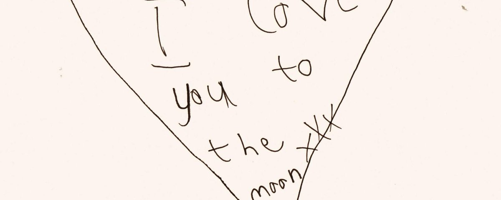

那年夏天结束得很慢。
九月已经到了，街边的蝉却还没有完全安静下来。傍晚六点后，太阳落在公寓楼的背面，天空剩下一层很淡的灰蓝色。便利店门口的风铃偶尔响一下，没人进去，也没人出来。
響在那里等葵。
他等了二十分钟，葵迟到了七分钟，他从街的另一头走过来，手里还是拿着那一罐啤酒。
響已经见过很多次了。
没有打开。
他曾经问过他为什么。
葵说，只是习惯。
远处的摩托车的发动机先响，轰隆隆从远处碾来。车头灯刺眼，风卷着灰尘扑上人行道。而后它又走了，轰鸣渐渐缩成一声嗡鸣，消失在马路尽头。
街边恢复安静，像什么都没发生过。
后来響也没有再多问。
河水在傍晚看起来比白天更深。天色暗下来之后，水面就不再反射什么了，只是沉默地流着，黑沉沉的一片，像是把白天所有明亮的东西都吸了进去，消化掉，什么也不剩。偶尔有自行车从身后经过，车铃响一下，短促而清脆，随后声音便消失在桥的另一边。骑车的人没有回头，桥上的人也没有转头去看。
響靠在栏杆上，两手插在外套口袋里，望着水面。
“最近很忙吗？”
“还好。”
“睡得好吗？”
“也还行。”
他点点头，没有再说什么。
两人之间有时候就是这样。
一句话出去，停在那里，像一颗石子丢进傍晚的河里，没有水花，没有声响。也没有人把它接回来。也许是因为接回来也没什么不同，也许是因为，有些话本来就不是为了被接住才说出口的。它只是在那里，悬在两个人之间的空气里，然后慢慢地、安静的沉，沉的更深的地方。
-
他们刚认识不是这样的，那时候葵会给響发很长的消息。
25 点，26 点，甚至 27 点，他说起一些无关紧要的事情：家里的猫，妈妈做的饭，一篇看不懂文法却觉得很好读的小说。
響总是回复。
有时候两个人会一直聊到天亮。
第二天早晨，城市都还没有完全醒过来，響躺在床上看着手机，窗帘缝隙里透进一条很细的光。
響曾经以为，那就是某种答案。
并不是因为葵说了什么。
因为一个人愿意在夜里把一些没有意义的事情告诉另一个人。
“分享欲。”
他以为亲密本身就是意义。
后来他才知道，亲密可以是真的，可是亲密并不一定会把两个人带到同一个地方。
也是真的。
他们第一次产生争执，是因为一件很小的事，小到现在回想起来，響甚至已经记不清具体是什么。
他只记得自己那天说：“我不知道我们到底在做什么。”
葵没有回答。
窗外正在下雨，雨水顺着玻璃往下流，城市的灯光被拉成细长的线。
響又问了一遍。“你怎么想，你到底在想什么？”
葵说：“你觉得我应该想什么？”
那一刻響忽然很难过，不是因为这个答案，而是因为她发现，自己等了这么久，竟然真的只能等到另一个“为什么”。
后来他们还是继续见面，仿佛什么也没有发生。
有时候一起吃饭，有时候散步，有时候坐在咖啡馆里，各自做自己的事情。
響也渐渐学会不再问。他不再问他们是什么，不再问以后和未来，也不再问葵有没有想过他。
他只是安静地待在那里，好像只要不问，一切就还能维持原来的样子。
可有些东西一旦被看见，就再也无法假装不存在，他开始注意到很多以前不会注意的事情。
響回复消息越来越慢。
他们见面的间隔越来越长。
有些话题永远绕开。
有些问题只要一出现，空气就会突然变得很轻。
像一扇没有关严的窗。
风从里面穿过去。
谁也没有伸手去关。
事情的发生，是他们在一家很小的mini咖啡馆，店里只有他们和另外一桌客人，灯光很暖。
響忽然觉得那一刻很像以前，他看着对面的葵，突然产生一种奇怪的冲动。
他想把一切都重新开始。
想告诉他：
“我们认真一点，好不好？”
可是话到了嘴边，又被她咽了回去。
他知道，如果一个人需要被这样请求才能向你走近，那么这件事本身已经说明了什么。
吃完饭以后，葵难得主动的问：
“要不要再走一会儿？”
“不了。”
这是他第一次拒绝他。
葵愣了一下。
很短。
然后点点头。
“好。”
他们在咖啡店门口分开。
那天晚上没有发生任何特别的事情，没有争吵，没有告别，甚至没有一句重话。
可是響回到家以后，却是很久都没有睡，他他坐在窗边，看着街上的车一辆一辆开过去。
忽然觉得，有些东西确实已经结束了。
只是当时还没有人承认：泪比话先到很多，只不过风一吹就散了。
冬天来的时候，響开始整理房间，他把一些旧衣服装进纸箱，把桌上的书重新分类，把抽屉里很久没用的东西全部扔掉。
他整理出一张车票，是很久以前和響一起去某个地方的时候留下的。
那天他们坐在靠窗的位置，葵睡了一路，響没有叫醒他。
他记得阳光落在他脸上的样子，那时候她觉得，只要他们能够一直这样坐下去就好了，没有目的，没有终点，火车沿着海岸向前，窗外偶尔出现一小片蓝色的海，她那时候不知道，原来有些旅程之所以让人觉得幸福，只是因为那时还没有意识到它终究会抵达哪种终点。
響把车票放在掌心里看了一会儿。
然后扔进了垃圾桶。
没有犹豫。
-
新年以后，葵发来一条消息。
只有一句：“最近还好吗？”
響看了很久。
他没有立刻回复，如果是过去的话，他大概会想很多，会猜这句话是什么意思，会想他是不是想念他了，是不是在试探，是不是终于想明白了一些什么。
可是那一天，響只是觉得很安静。
最后回复：“还好。”
葵过了一会儿说：
“那就好。”
消息停在那里。
響把手机放下。
窗外正在下雪，雪落在窗台上，很快积成薄薄的一层。
她忽然发现，自己已经没有什么想问他的了。
这一刻他才真正明白：
放下并不是不再想念，而是终于没有问问题的欲望了。
-
春天来之前，響又去了那条河，那天很冷，树枝还没有发芽，河岸两边都是枯黄的草。
她在桥上站了一会儿，远处有人牵着狗散步，一个孩子拿着气球跑过去。
城市和平常一样，没有人为谁停下来，天上挂着明晃晃的彩虹，他想起以前葵说过的一句话。
他说：
“不拥有的喜欢才美好。”
那时候他觉得这句话很浪漫。
现在却觉得，他其实早就知道答案了。
只是他自己，花了很长时间才明白。
-
響没有再去找葵，也没有等他来找自己。
他只是开始把生活重新放回自己手里：早上按时起床，下班以后去超市，周末洗衣服，偶尔和不认识的朋友去看电影。
天气好的时候，響会沿着河走很远。
有时候经过他们以前去过的咖啡馆，響还是会想起他。
但也只是一瞬间，像看见一扇熟悉的窗，窗里曾经亮过灯，现在已经熄灭了，他也没有必要进去确认了。
四月的第一场雨下得很轻。
響撑着伞走过车站，广播里正在播报晚点信息。
人群挤在站台上，每个人都朝着自己的方向。
他忽然在人群里看见了葵。
他站在轨道的另一边。
距离不算远。
只隔着一条轨道。葵停了一下。
葵也看见了他。
两个人都没有走过去。
铁轨的轰隆声先来，而后列车从中间驶过。
车窗一扇一扇地亮着。
他们的身影在玻璃上短暂地闪映重叠，又很快分开。
列车过去以后，葵仍然站在那里。
響似乎想说什么。
但最后只是抬了抬手。
像从前一样。
葵也抬起手。
然后放下。
没有笑。
也没有哭。
对方只是轻轻点了一下头。
他们之间隔着的东西其实并不远。
可響忽然知道，已经没有必要再走过去了。
響走得很慢，但没有回头。
身后的列车再次启动，轰鸣声渐渐远去。
那一刻，他第一次没有觉得遗憾。
她只是想：
原来故事真正结束的时候，并不会有什么声音。
没有门被关上。没有最后一句话。
更没有谁宣布从此以后不再相见。
只是有一天，你突然发现——
你已经走到了故事之外。
而那个人，仍然留在故事里。
后来響偶尔还是会想起葵。
他不会再刻意躲开这个名字。
他也知道自己曾经爱过，也知道那份爱，那份感情真实胜过任何东西。
他们之间发生过的那些事情，也不会因为离开而变得没有意义。
只是有些人出现在生命里，并不是为了陪你走完全部的路，有的人教你靠近，有的人让你知道等待是什么。
有的人让你终于明白：
即使两个人曾经拥有过真实的感情交融，但也未必能够拥有同一个未来。
響后来再也没有见过葵了。
至少，在他的故事里没有。
春天终于来了，河岸边的树一棵一棵长出新的叶子，风吹过的时候，叶片翻出很轻的声音，像很远很远的地方，有人在翻一本已经读完的书。
響走过那条河，没有停下来。
他走了很久。
直到那座桥消失在身后。
然后，他继续往前走。
这一次，前面没有谁在等他。
也没有关系。
因为他已经不再需要为什么而再继续等待了。
生命中不是每个故事都会有结局，也要允许有未完成感的事情存在。
感谢一切出现在我生命里的人。 https://t.co/ZJrtEe34dU
感谢一切出现在我生命里的人。 https://t.co/ZJrtEe34dU
Article attached to this post
春天以前
